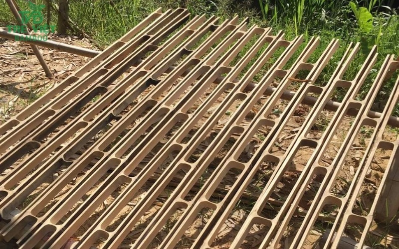
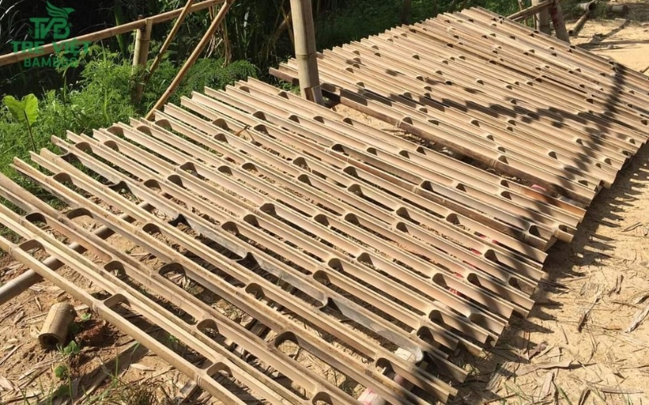
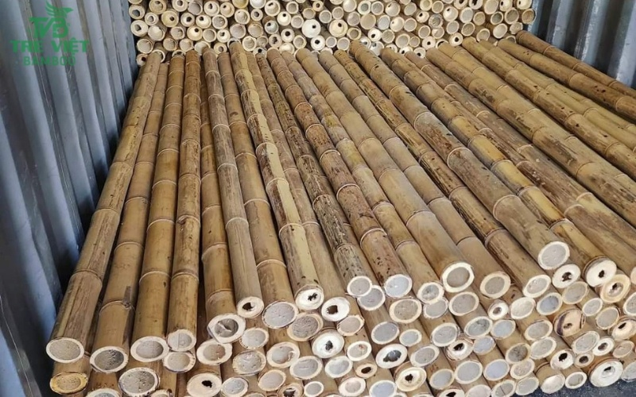
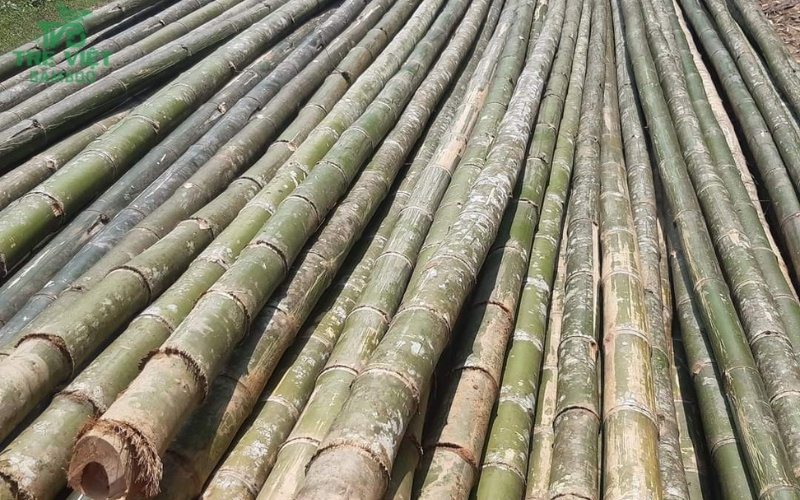
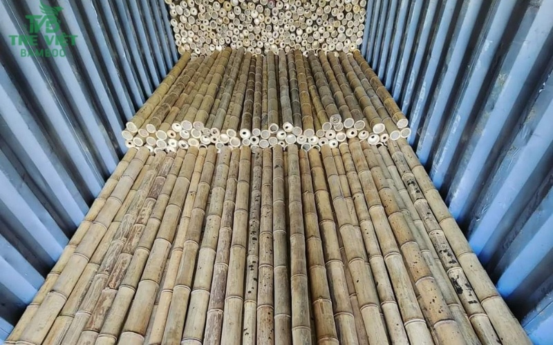
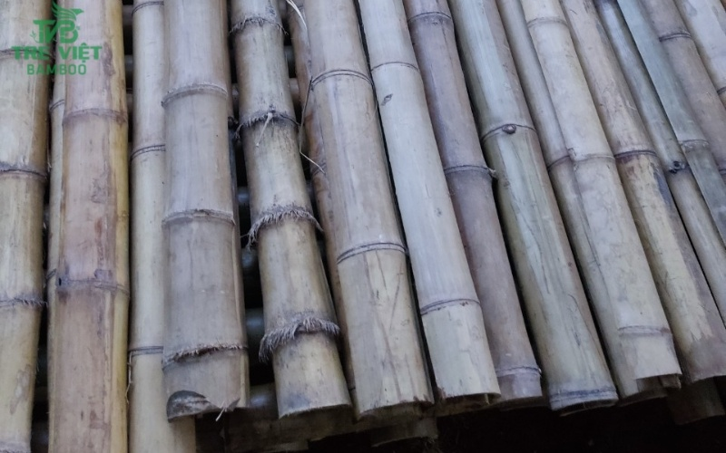
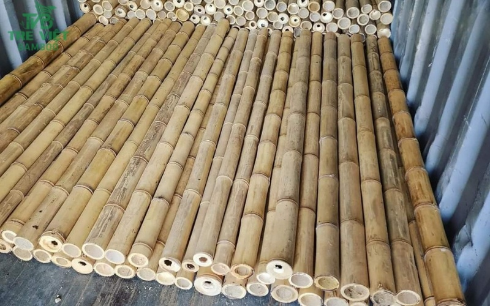
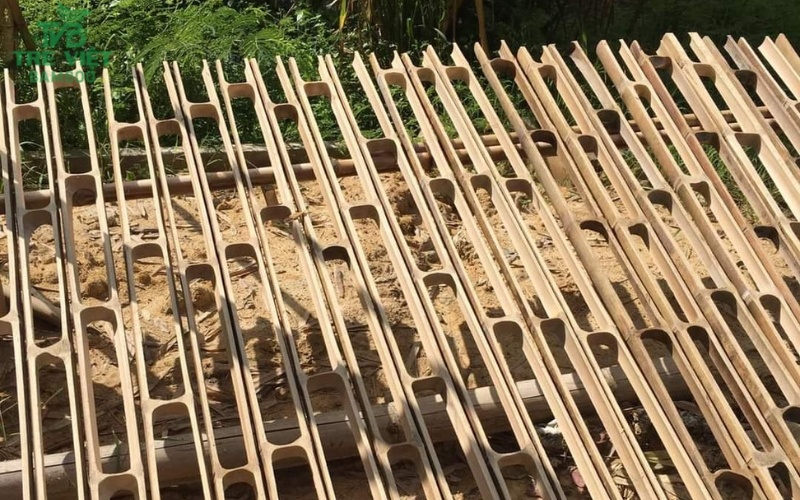
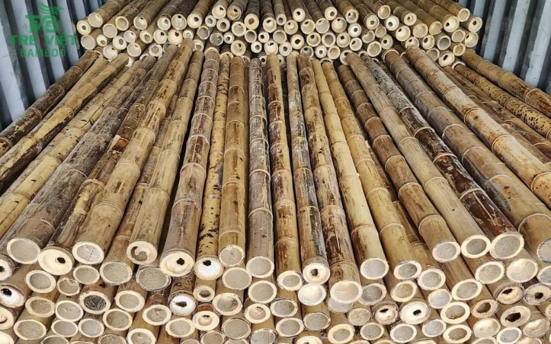

báo giá cây trúc đã xử lý
8.500 ₫











30.000 ₫28.500 ₫
là nguyên liệu tre trúc thân thiện với môi trường. Ngày nay tre luồng được ứng dụng nhiều trong đời sống như làm bàn ghế tre, sofa tre, tủ tre, giường tre, ốp trần, nhà tre, ốp tường bằng tre, hàng rào tre…
Cây tre Luồng là một loài tre có tên khoa học là Dendrocalamus membranaceus Munro. Tre Luồng thân to, lá nhỏ, không gai. Thân rễ hình củ và thưa thớt, có đầu cong và ngắn

Với nhiều năm kinh nghiệm trong mua bán nguyên liệu cây tầm vông, cây tre luồng , cây trúc, cây tre gai đã qua xử lý chúng tôi luôn tìm giải pháp mang đến cho quý khách giá thành tốt nhất. Vì là đơn vị tự cung tự cấp nên Tre Việt mang đến giá cây luồng cạnh tranh và giá thành tốt nhất trên thị trường
Giá cây luồng sẽ thay đổi tùy bào kích thước, cũng như đường kính của cây luông. dưới đây là giá bán lẻ cây tre luồng đã qua xử lý tại Thành phố Hồ Chí Minh.
| Loại cây luồng | Đơn giá |
| Cây luồng 2m, cây có đường kính 8-10cm | Từ 70.000 – 80.000 VNĐ |
| Cây luồng 2m5, cây có đường kính 8-9cm | Từ 90.000 – 110.000 VNĐ |
| Cây luồng 3m, cây có đường kính 8-9cm | Từ 95.000 – 130.000 VNĐ |
| Cây luồng 4m, cây có đường kính 8-9cm | Từ 125.000 – 150.000 VNĐ |
Tre Việt luôn có những chương trình ưu đãi, cũng như chiết khấu cao cho những đơn hàng lớn, quý khách có nhu cầu hãy liên hệ ngay để được tư vấn báo giá và hỗ trợ nhanh nhé
Ngày nay, cây luồng được phân bố tại nhiều các tỉnh thành Việt Nam, bởi đây được xem là loài cây dễ sống có khả năng chịu khô rất tốt.
Tre luồng là loài có nhiều ưu điểm nổi trội hơn so với những loại cây thuộc họ nhà tre khác:

Chúng tôi có quy trình lựa chọn sản phẩm khắt khe đảm bảo chất lượng cây luồng khi đến tay quý khách vẫn đảm bảo được chất lượng tốt nhất. Các sản phẩm được xử lý mối mọt, phơi sấy khô và xử lý mối mọt kỹ càng.
Quý khách có nhu cầu mua với số lượng lớn hãy đến ngay Tre Việt , chúng tôi có nguồn nguyên liệu dồi dào, là đơn vị tự cung tự cấp nên cam kết giá thành rẻ và cạnh tranh nhất thị trường.
Liên hệ ngay hotline: để được tư vấn báo giá đồng thời nhận chiết khấu cao đối với các đơn hàng lớn.
Trên thị trường hiện nay có rất nhiều nơi rao bán tre luồng, tuy nhiên không phải ở đâu cũng bán đúng loại tre luồng và loại chất lượng hay để giá thành quá cao so với giá thị trường. Để tìm mua được loại tre luồng chất lượng, bạn cần tìm hiểu kỹ nơi cung cấp cây luồng.
Bạn có thể đến trực tiếp cửa hàng để xem chất lượng cây luồng hoặc có thể đặt mua trên mạng. Tuy nhiên, chúng tôi vẫn khuyến khích bạn đến mua trực tiếp hoặc hỏi bạn bè, những người quen đã từng mua loại cây này để chọn được nơi uy tin và tin cậy.
Trường hợp bạn vẫn chưa biết chọn mua cây tre luồng ở đâu giá rẻ và chất lượng thì có thể tham khảo tại Tre Việt được xem là địa chỉ cung cấp cây luồng tươi và khô giá rẻ uy tín và chất lượng tại khu vực TPHCM.

Với quy trình chọn lọc kỹ càng, đơn vị của chúng tôi chọn ra những cây tre luồng thẳng và chất lượng nhất ở môi trường tự nhiên. Đặc biệt, các sản phẩm tre luồng tại Tre Việtđã được xử lý mối mọt, làm thẳng, phơi sấy khô hoặc tẩm sấy.
Những thông tin bên trên phần nào đã giúp khách hàng biết được giá của tre luồng và tìm được địa chỉ mua tre luồng uy tín chất lượng. Khi mua cây tre luồng tại cửa hàng Tre Việt , quý khách sẽ nhận được chiết khấu sản phẩm cao.
CÔNG TY TRÁCH NHIỆM HỮU HẠN TRE VIỆT BUILDING
Địa chỉ: 917 Phạm Văn Đồng, Phường Linh Xuân, Thành phố Hồ Chí Minh
Nhà máy sản xuất: Phú Hợp B, Xã Phú Lâm Đồng Nai.
Làng nghề tre tầm vông – hợp tác xã tầm vông Tố Lan
Website: tretruc.com.vn
Điện thoại – Zalo: 093.123.5757
Email: treviet23@Gmail.com
8.500 ₫

Nguyên liệu cây tre tầm vông ngày càng được ứng dụng nhiều trong đời sống, với nhiều năm kinh nghiệm Tre Việt là đơn vị có nguồn cung dồi dào, chất lượng.
17.000 ₫15.000 ₫
Tre Việt Building đơn vị tiên phong đưa vật liệu chống nóng bằng sản phẩm tự nhiên vào thiết kế của mình, trong đó thi công lợp mái lá (lợp guộc) hiệu quả cao.
800.000 ₫650.000 ₫